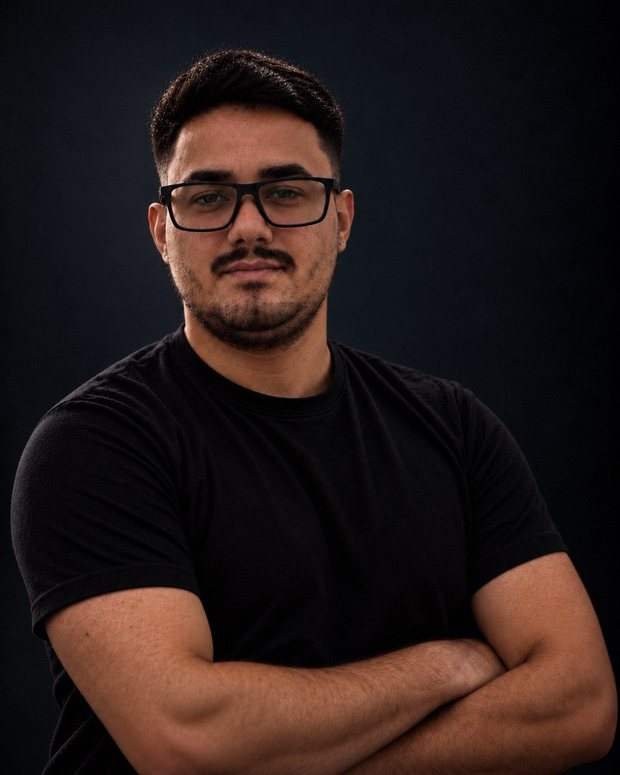

Sebastião Moura
Sócio · Geofísico
CREA-PA 1523380373
- Trajetória
- Experiência em prospecção mineral por magnetometria, processamento e interpretação de GPR para mapeamento de dutos, perfilagem de poços e georreferenciamento. Desenvolveu pesquisa em inversão do vetor de magnetização na UFPA.
- Especialidades
- Magnetometria
- GPR
- Geoelétrica
- Perfilagem de poços
- Geoprocessamento
- Formação
- Geofísica pela UFOPA (2020), especialização em Engenharia Geotécnica (2022) e mestrado em Geofísica pela UFPA (2025). Doutorado em Geofísica em andamento na UFF.
- Experiência
- Atuação profissional desde 2020